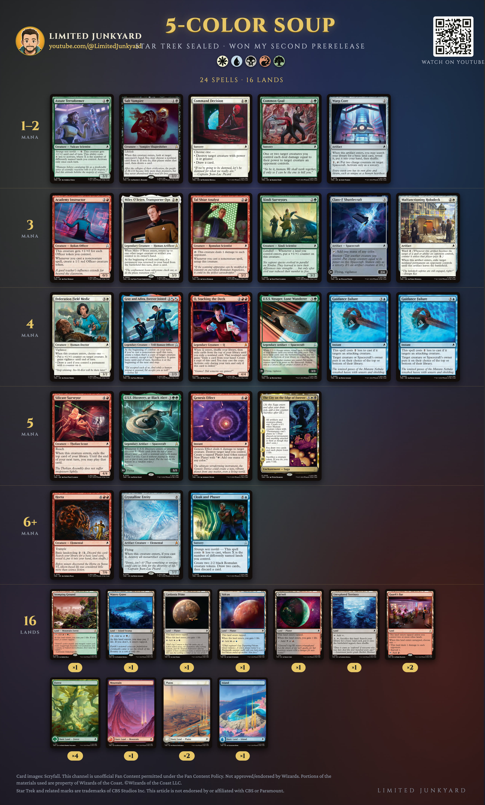
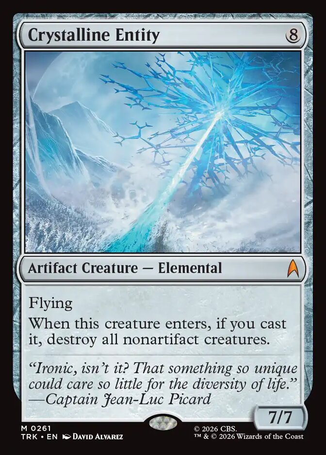
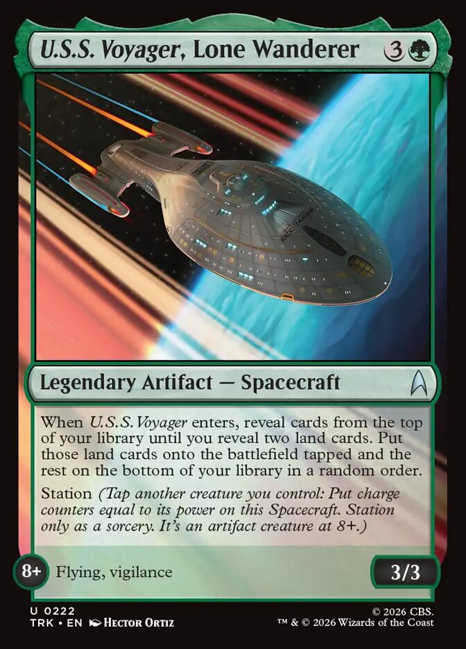
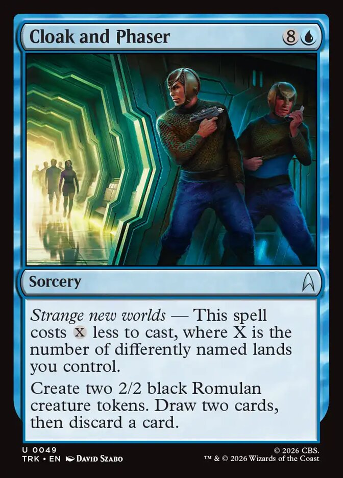

Home · Star Trek
5-Color Soup: The Sealed Deck That Won My Second Star Trek Prerelease
I played a second Star Trek prerelease, and won it. This is the deck: all five colors, sixteen lands, and a mana base that reads like a dare.
My summary, written the same day:
“A 5 color soup, mana was never a problem, all the value cards with a few bombs.”Balazs, Limited Junkyard

The decklist
Creatures (12)
- 1 Astute Terraformer
- 1 Salt Vampire
- 1 Xindi Surveyors
- 1 Tal Shiar Analyst
- 1 Academy Instructor
- 1 Miles O'Brien, Transporter Ops
- 1 Gray and Adira, Forever Joined
- 1 Q, Stacking the Deck
- 1 Federation Field Medic
- 1 Silicate Surveyor
- 1 Horta
- 1 Crystalline Entity
Spacecraft (3)
- 1 Class-F Shuttlecraft
- 1 U.S.S. Voyager, Lone Wanderer
- 1 U.S.S. Discovery, at Black Alert
Instants and sorceries (6)
- 1 Common Goal
- 1 Command Decision
- 2 Guidance Failure
- 1 Genesis Effect
- 1 Cloak and Phaser
Other spells (3)
- 1 Warp Core
- 1 Malfunctioning Holodeck
- 1 The City on the Edge of Forever
Lands (16)
- 1 Stomping Ground
- 1 Watery Grave
- 1 Cardassia Prime
- 1 Vulcan
- 1 Qo'noS
- 1 Unexplored Territory
- 2 Quark's Bar
- 4 Forest
- 1 Mountain
- 2 Plains
- 1 Island
Why the soup didn't spill
Five colors is usually how a sealed deck loses to its own lands. This pool brought enough fixing that it never came up.
Six of the sixteen lands make two colors or go and get one: Stomping Ground, Watery Grave, three Planets (Cardassia Prime, Vulcan, Qo'noS) and Unexplored Territory, which trades itself for any basic.
Then the spells that fix. Warp Core puts a basic in your hand. Class-F Shuttlecraft taps for any color. U.S.S. Voyager puts two lands from your library onto the battlefield. Horta cycles for a basic when you don't need a 7/6 yet, and Genesis Effect kills a creature and swaps one of your lands for a New Planet that taps for any color.
And the colors don't all ask for much. Red and green carry the most cards, six and five. White has five, counting The City on the Edge of Forever. Blue has three, plus Gray and Adira, whose hybrid cost red can pay. Black is two cards: Salt Vampire and the City.
The set pays rent on the soup
Cloak and Phaser and Astute Terraformer have Strange new worlds: they get cheaper for each differently named land you control. These sixteen lands carry eleven different names.
With seven of them out, Cloak and Phaser costs two mana: two 2/2 Romulans, draw two, discard one. With six, the Terraformer's +2/+2 is free once a turn. A tidy two-color deck can't do that. Rarely has a messy mana base been this well paid.
All the value cards, a few bombs
Most cards here leave something behind. Salt Vampire looks at their hand and exiles the nonland card you pick (they draw a replacement). Miles O'Brien returns another creature or artifact of yours to your hand, so Salt Vampire, Silicate Surveyor or Warp Core does its thing twice, and draws a card at end of turn for the trouble. Federation Field Medic, Command Decision and Silicate Surveyor all come with a card or a choice attached.
The removal is quietly deep: Common Goal, Command Decision, Malfunctioning Holodeck, Genesis Effect and two Guidance Failure.
And the few bombs. Three cards in this deck are rated Bomb on my own rares and mythics page: Crystalline Entity, U.S.S. Discovery, at Black Alert (a free spell every time it enters or attacks) and The City on the Edge of Forever (a reset button that draws you two cards).
Key cards

Crystalline Entity
Eight mana, a 7/7 flyer, and when you cast it, every nonartifact creature is destroyed. The Entity is an artifact, and so are this deck's Spacecraft: Shuttlecraft, Voyager and Discovery stay. Your other creatures don't, so it's a reset you time, not a free win. Voyager's two free lands are a big part of reaching eight.

U.S.S. Voyager, Lone Wanderer
Four mana: two lands from your library straight onto the battlefield, tapped. Fixing, ramp toward the Entity and, with luck, two more land names for Strange new worlds, in one card. Stationed to 8, it's a 3/3 flyer on top.

Cloak and Phaser
The soup's payoff. Nine mana on paper; with six or seven differently named lands out, three or two. Two bodies and a loot of two for the price of a bear.
More from Limited Junkyard
- The first prerelease I won has its own video: on the channel.
- The Star Trek prerelease guide (video)
- Prerelease cheat sheet, two pages, print it for your deck box
- My top 10 commons and uncommons in each color, the ten best in each color, ranked
- Every common and uncommon rated, a grade and a reason for each one
- Every rare and mythic rated, the bombs, the traps, and everything between
- New videos every week: youtube.com/@LimitedJunkyard
Sources. The decklist is read from Balazs's photo of the deck; every card name is checked against Scryfall's card data. All 40 cards are visible in the photo: 24 spells and 16 lands (2 Plains, 1 Island, 1 Mountain, 4 Forest and 8 nonbasic lands). One of his two Quark's Bar is a showcase printing and his basics come from other sets; the deck image shows the standard Star Trek printings.